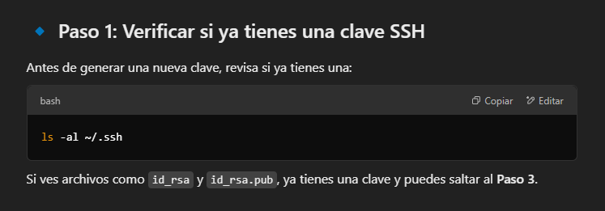
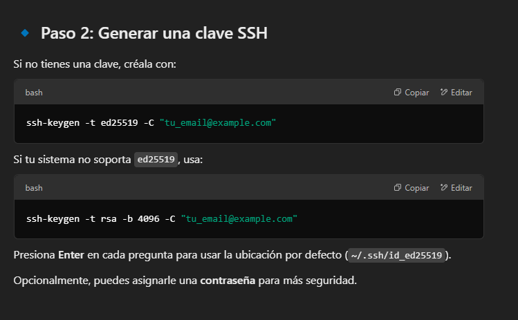
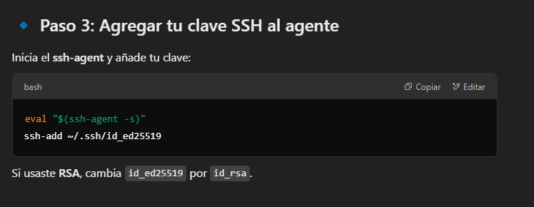
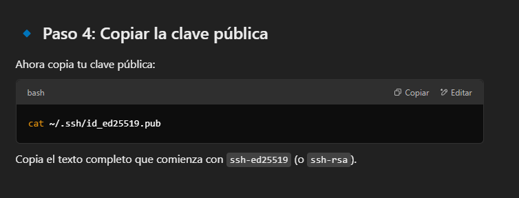
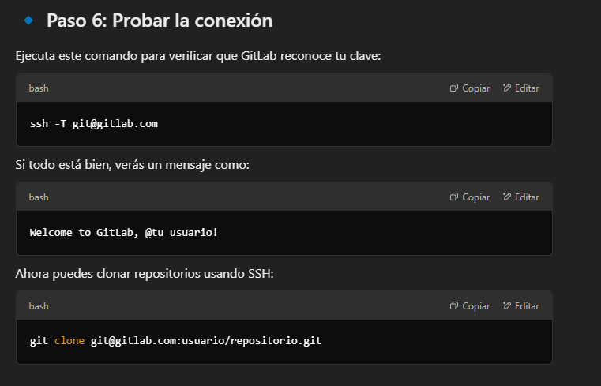

GitLab
GitLab
1. Acceder a GitLab
2. Generar una clave SSH en la terminal
3. Agregar la clave SSH al agente
4. Configurar la clave SSH
5. Copiar la clave SSH al portapapeles
6. Probar la conexion mediante ssh

🔹 ¡Listo! Ahora puedes usar GitLab con SSH de forma segura.
Si tienes algún problema, dime qué error te aparece. 🚀